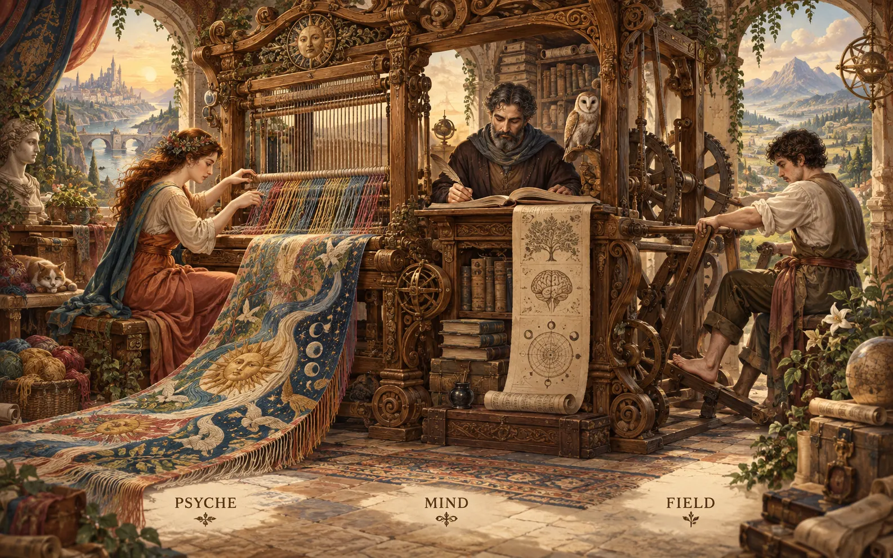

The Anatomy of a Nexus
· Page 1One city, two gates, one vault
A Nexus is a walled city. The market gate is the ordinary socket, and anyone with the right key to the city can use it. The iron door is the meta socket, which only the owner opens. The vault is Sema, the Nexus's own store.
The five parts every Nexus has
Nexus is our word for the style of component that speaks signal and uses a similar database.
-- Vision/nexus.md (distilled from several psyche records)
the ethos code can live with the component. like all components (component + 2 signal repos)
-- psyche, typed, 2026-08-11, flows/012fbf07/vision/threeStacks.md
- Body: the
<x>repo, which builds the binary<x>-nexus. It holds the Nexus Core (Kameo actors), its traits and its logic. - Ordinary contract:
signal-<x>, the words any authenticated peer may use. - Meta contract:
meta-signal-<x>, for Configure and other owner-only operations. It is "never optional". - Clients: the
<x>and<x>-metaCLIs. One inline Datom goes in and one Datom comes out. Text stops here. - Memory:
<x>.sema, one store holding both policy and working state.
The two gates as a latch. Configure is open on the ordinary socket only until the owner has configured once through meta. After that it stays on meta, and only ReverseMetaConfiguration reopens it. The owner receives bootstrap authority and cannot lose it by accident.
The interpreter at the border
The letter is Datom, which is text for people. The cylinder is Signal, which is binary and has no labels. The CLI is the interpreter. Past the gate nobody reads text again.
Text lives at exactly one place
The textual form is datom; a CLI actualizes it and sends signal; a Nexus never textualizes
-- Vision/signal.md
A Signal frame is a 4-byte length followed by one rkyv archive. Nothing on the wire says what it is, because both sides compiled the same contract.
The contract is written in Ethos. This is Orchestrate's, the smallest complete one (from signal-orchestrate). It has four sections: imports, queries, replies and types.
Signal
[]
[ Configure.OrchestrateNexusConfiguration Lock.LockRequest Release.LockId Observe.ObserveSelection ]
[ ConfigurationAccepted.ConfigurationReceipt ConfigurationRefused.ConfigurationRejection
Locked.Lock Released.Lock Observed.Observation LockRejected.LockRejection ReleaseRejected.ReleaseRejection ]
[ ... LockRequest.{ LockName FlowId Vector<LockPath> LockReason }
Lock.{ LockId LockName FlowId Vector<LockPath> LockReason }
LockRejection.[ DuplicateName.Lock PathOverlap.LockOverlap ] Observation.[ Locks.Vector<Lock> ] ]How to read it:
Name.Typeis an alias,Name.{ }is a struct andName.[ ]is an enum.- A query is a verb (
Lock). Its reply is the past tense (Locked). - A refusal has its own name (
LockRejected) and carries a closed list of reasons, never a free string.
Stars joined by treaties
Each star is a Nexus. Each scroll is a contract between two of them. The gold doubled threads are meta edges, which only some pairs have. The two bright hubs are Mentci and the Router, which are compiled with every contract.
The contract is the whole relationship
A Nexus depends on another Nexus's contract crate, never on its code. These edges were observed:
- Message → Flow (
ResolveRecipient), and Message → Harness. - Flow → Herdr and the Codex app-server. These are outside Signal.
- Lojix → Horizon, Mind → Persona and Spirit → Domain.
If we add a new thing to the cluster of nexuses, then everybody has to recompile
-- psyche, flows/b81560 (quoted in the anatomy report)
Where it disagrees with itself (found in the contracts, witnessed):
- Message pins signal-flow
968ae3b, but Flow 0.7.0 shipsab70332. Two generations of one contract are live on the same edge. ComponentKindinsignallists fourteen Nexuses, but neither Flow nor Psyche is among them.- Framing is split three ways: Orchestrate uses a handshake with named exchanges, Router and Message use one request and one reply per connection, and Lojix sends
Signal<Query>.
The key-rack
Every key is an Orchestrate lock. Its tag lists the paths it holds and why. Nobody can hang a key on a hook that overlaps another one's paths.
Orchestrate, the purest Nexus
I think it's better to think of the lock as the lock, and the lock returns like a certain structure which shows the paths.
-- psyche, typed, 2026-08-26, flows/01a03d6e/vision/locks.md
The description becomes the commit message, so we ask them to write their Orchestrate lock as they would write their commit message
-- psyche, flows/9993b5/vision/orchestrateCommitBinding.md
Request (witnessed):
orchestrate 'Lock.{ MyLock 6329f1 [ /absolute/path ] «why I hold it» }'Reply (constructed):
Locked.{ 442 MyLock 6329f1 [ /absolute/path ] «why I hold it» }A watch opens with the full state even when it is empty (witnessed in tests): Observed.Locks.[].
Orchestrate depends only on signal, so it has no other edges. It is also the only contract that uses the Signal exchange layer: a handshake by contract digest, named exchanges, and ExchangeFault.Lagged for a subscriber that falls behind.
Launch tickets
A Flow launch is a ticket stamped in order. Each stamp is written down before the next step happens, so a crash always leaves a readable ticket behind.
Flow Nexus starts the seats
The Flow Nexus sets up and starts a model flow: its working directory, system prompt, training files and instruction prompt.
-- Vision/flowNexus.md
It has to have a way to compose the prompts: the first prompt and eventually a way to compose the system prompt
-- psyche, typed, 2026-09-23, flows/836818/vision/flowNexus.md
The stamps are written into the type (from signal-flow@ab70332):
LaunchAttemptPhase.[ Reserved NativeLaunchIntentRecorded NativeBound RegistrationAcknowledged
PromptIntentRecorded PromptObserved PromptAmbiguous ]
FlowAspect.[ Psyche Mind Field ] PowerLevel.[ High Medium Low UltraLow ]
FlowLifecycle.[ Pending Active Stopped ]Request (witnessed, flow README):
flow 'Send.{ 00f95a «continue with the implementation» }'Reply (constructed):
Sent.Presented.{ 00f95a w1:p2 flow-marker-7 1758790000000 }The sorting room
Message never guesses where a flow lives. Before every delivery it asks Flow's registry (ResolveRecipient), and then drops the letter into that flow's pane.
Message Nexus delivers without an envelope
The message body is a datom that lands in the recipient's prompt as a datom-formatted object. There is no envelope around it.
-- Vision/messaging.md
The message highly depends on flow and probably many things will then depend on message.
-- psyche, typed, 2026-09-23, flows/836818/vision/nexusAnatomy.md
A receipt is graded by what it proves. "Accepted" only means the message was taken in:
ReceiptKind.[ Accepted TranscriptWitnessed Parked FileOnly ]
DeliveryReceiptState.[ Recorded.DeliveryReceiptRecord Missing.FlowIdentifier ]Request (witnessed, message README):
message 'QueryDeliveryReceipts.{ event-42 [ target-a target-b ] }'Reply (constructed):
DeliveryReceiptListing.{ event-42 [ Recorded.{ target-a Accepted false } Missing.target-b ] }The dry-dock
Each hull is a generation of a machine. The chained ones are pinned and kept. The one sliding into the water is being deployed.
Lojix deploys, and admission is not completion
you make a clean Lojix nexus that, for now, uses SSH on Ouranos.
-- psyche, flows/024bc7/vision/bootstrap.md
The interface is lojix and meta-lojix CLI only.
-- psyche, flows/01a02b46/vision/zeusUpdate.md
DeploymentPhase.[ Submitted Building Built Copying Activating Activated Completed Failed Rejected ]
GenerationSlot.[ Pinned Recent Rollback BootPending Current ]Request and reply (witnessed, lojix skill):
lojix-meta 'Pin.{ alpha node-1 42 keep }'
DeployAccepted.{ 13 { 263 263 } }DeployAccepted only means the request was admitted. It does not prove the deploy finished. The { 263 263 } is a DatabaseMarker, which places the reply in the store's history.
Lojix is the one Nexus that turns meta around. Deploy is an owner operation, so here "ordinary" means read-only.
The loom

Psyche weaves meaning, Mind keeps the ledger of every thread, and Field works the treadle. The loom is the body of the machine, and each of these three roles is becoming a Nexus of its own.
Psyche and Mind become Nexuses
Psyche Nexus is going to replace how we log Psyche and Mind.
-- living, 2026-09-25, flows/e51411/vision/nexus.md ("and Mind" may be a slip; not confirmed)
Mind Nexus is going to replace how we log the Mind and the field, not just log, but how the Mind interacts with the system
-- living, 2026-09-25, flows/e51411/vision/nexus.md
Psyche today is an empty scaffold. Its live words come from signal-spirit, which has a guardian that can refuse a record for its meaning:
Kind.[ Correction Principle Decision Constraint Clarification ]
GuardianRejectionReason.[ Duplicate Contradiction Compound NonIntent NegativeGuideline Matter
UnclearDomain ClarifyTramples ClarifyLosesMeaning ]Mind has the largest contract, which is a graph of thoughts and relations:
ThoughtKind.[ Observation Memory Belief Goal Claim Decision Reference ]
Thought.{ RecordIdentifier ThoughtKind ThoughtBody ActorName TimestampNanos }Request (constructed): mind 'SubmitThought.{ Observation «Flow Send promotes Pending rows» }'
Proposals
- 1
- 2
- 3
- 4
- 5
- 6
- 7
- 8
- 9
- 10